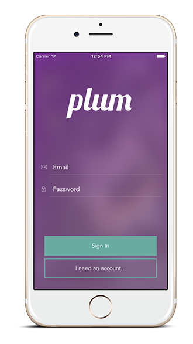

One thing that’s always been an interest of mine, beyond just as it relates to development has been mobile. As a designer, I’d always seek out projects with a mobile element to them, whether it was a mobile first app or responsive site, there was always something more interesting to me with something that I could use and view on a smartphone.
When final projects at Dev Bootcamp (DBC) arrived, it provided an opportunity, not only to explore this interest, but to explore new technologies, and make something meaningful and of value at the same time. It was only fitting that my group ended up choosing to do our project as strictly a native mobile application, and to do this, we chose to use React Native.
React Native and Mobile Development
Since React Native is not part of the curriculum at DBC, this required an intense immersion into React Native, while trying to complete a project in the 8-day timeline. The first 2 days of this timeline were spent in this immersion, just learning the technology, and trying to get up to speed on the intricacies of the framework, and what components, states, and props among others are. In addition, we also had to get up to speed with using Xcode, a program used to compile iOS apps, and allow us to simulate our app in development.
Learning React Native in such a short timeframe proved to be one of the most frustrating, and rewarding learning experiences in my career. With its set two-week release schedule to create a stable working version of the framework, React Native is still very young. Only in version 0.27 as of this writing, one of the pains as an early adopter of the framework are the lack of sophisticated documentation, and ever-changing nature.
One such pain we encountered in the process was that in the main Udemy tutorial we went through, the instructor used a now-deprecated way of importing React. While this may not seem like a major hurdle to rewrite all the imports across our app, in such a short timeframe, time is a major luxury that cannot be spent poorly.
Past the frustrations, and getting over the occasional red screen of death popping up, it’s truly fascinating to build a React Native app. One source of jubilation for me was getting the Tab Bar, and navigator working together. Being able to transition between different scenes on an app, and being able to back and forth between scenes is critical, and navigation and routing is incredibly frustrating and confusing in React Native, as evidenced by the issues related to the navigator.
plum
When the 8 days had passed, and it was all said and done, we had created plum, an app aimed at making group payments safer, easy, and less stressful. To my delight, our presentation to a crowd of about a 100 or so at DBC went well, and several of my peers came up to me afterwards to give their approval of the app, and say job well done. While plum hasn’t made it to the App Store… yet, the experience couldn’t have been more rewarding to take an idea from scratch, and working through the process to come up with a working product.
One thing I’ve prided myself on throughout my career, not just as a developer or designer in particular, has been the ability to quickly adapt to new challenges. Above all, it has been the ability to learn quickly and adjust my strategies to align with the challenge at hand to produce solutions, and working on plum exemplified this to the fullest.
Some helpful React Native resources:
- http://www.reactnative.com/
- https://css-tricks.com/snippets/css/a-guide-to-flexbox/ - for styling
- https://github.com/jondot/awesome-react-native